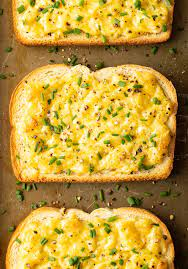

Cheese Toast
Description
A simple and delicious accompaniment to and soup, or just to have on its own
Ingredients
- Cheese - 200g
- Bread - 2 slices
Instructions
- Balance stack of cheese on bread
- Maneuver cheese-loaded bread into toaster oven
- Toast at 150 for 5 minutes, ensuring cheese is melted
- Transfer to foil, place back in toaster at 250 for 3 minutes or until cheese is toasted
Variations:
- Hot Stuff - Douse in your favorite hot sauce. As much as you like or can handle
- Currified - Spread yesterdays curry over the bread before adding cheese. Requires somewhat firm bread.